v 4.0.0
In this page, we will describe the standard workflow to assembling a bacterial genome taking in illumina paired-end reads and ONT demutuplexed in fastq format.
1. Setting up
To run the SQUIRLS app, your computer requires:
- Docker Desktop installed on your computer.
- The SQUIRLS app installed on your computer.
Starting Docker desktop
If Docker Desktop is currently active, you'll notice the Docker logo icon 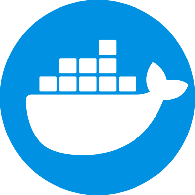 displayed in your taskbar.
If you suspect that Docker Desktop isn't running, simply double-click on the Docker icon on your desktop. This action will initiate and activate Docker in the background.
Starting the SQUIRLS app
If the SQUIRLS app is already active, you'll notice its icon displayed in your desktop taskbar.
or in your system tray.
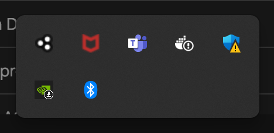
If you suspect that the SQUIRLS app isn't running, simply double-click on the SQUIRLS app icon on your desktop. This will launch the SQUIRLS app.
2. Selecting files for assembly
Your computer is now ready to start assembling genomes. This step requires a pair of fastq files from an illumina sequencing experiment per genome. When you move these two files to the designated folder, the SQUIRLS app will detect them and start the assembly process. Once the assembly process is finalized, you will have access to the assembled data in fasta format, along with its corresponding quality metrics file.
Open the SQUIRLS app
Click on the SQUIRLS app icon in your taskbar.
This will bring the SQUIRLS app app to the front, and it should look like this.
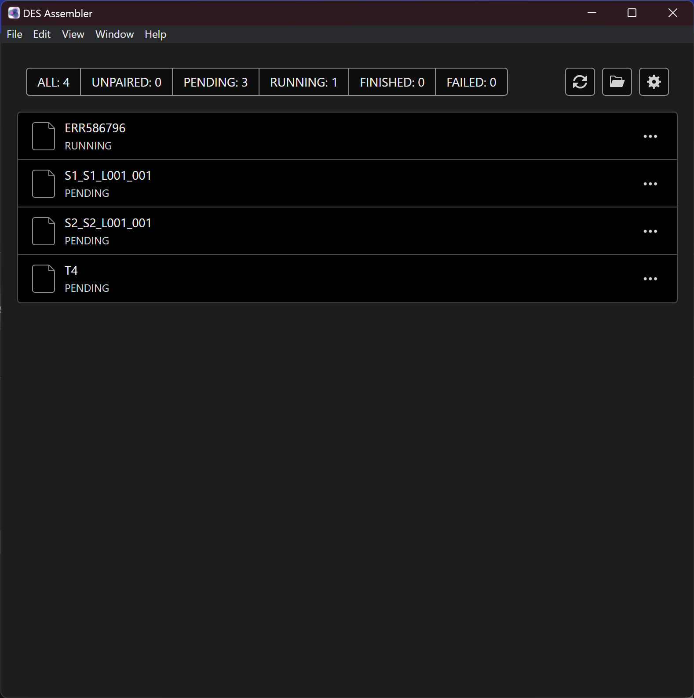
Drag and drop files for assembly
Warning
Your paired fastq file should end in one of the following formats:
{ID}_L001_R1_001.fastq.gzand{ID}_L001_R2_001.fastq.gz
Open the designated input folder by clicking on the folder icon in the SQUIRLS app. This will open the designated input folder.
Important
You can change the input folder clicking on the settings icon 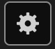, and changing the directory in the input folder field. Finally, click on Save.
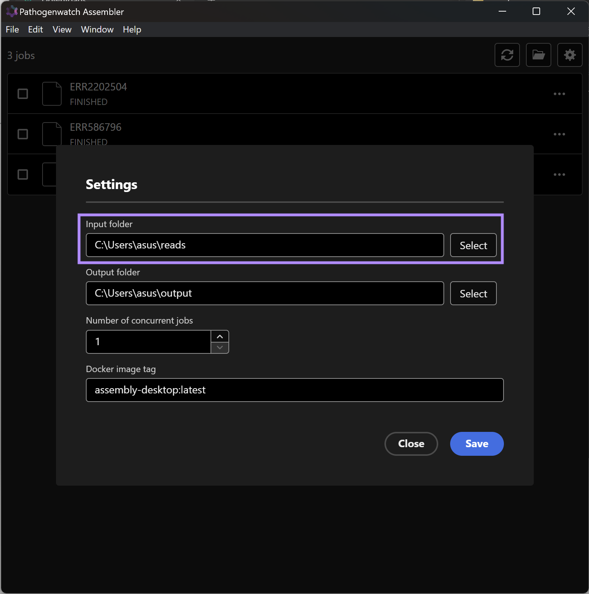
Select the fastq files from the genomes you would like to assemble and move them to that designated folder. The SQUIRLS app will detect the files in the input directory and start the assembly process.
3. Assembly progress
For Illumina Short Read
The SQUIRLS app will identify any new files within the input directory. These files will appear in the app labeled with the name preceding the _ character. For instance, if your input files are named bacteria_1.fastq.gz and bacteria_2.fastq.gz, then the app will display the input genomic data as bacteria.
Each genome will be assigned one of the following status:
UNPAIRED: The app has detected only one of the two pairedfastqfiles
Tip
If you think you have moved both fastq files to the input directory, make sure the name of both files is identical.
For example, salmonella_1.fastq.gz and salmonela_2.fastq.gz will be detected by the app as two different genomes: salmonella and salmonela, and they will both have the UNPAIRED status.
For ONT Long Read and Hybrid Assembly
In order to run ONT or Hybrid assembly, you have to provide a samplesheet csv file. The required format is as follows:
Here an example of a sample sheet for long read only sequences. 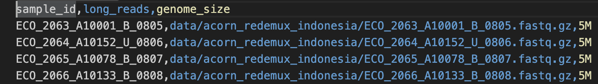
PENDING: The app is currently running the maximum number of concurrent jobs it is allow to run. An entry with aPENDINGstatus is in the queue and will start asRUNNINGjobs move to theFINISHEDorFAILEDstatus.
Note
You can modify the maximum number of concurrent jobs the app can run by clicking on the settings icon and changing the number in the Number of concurrent jobs field. Finally, click on Save.
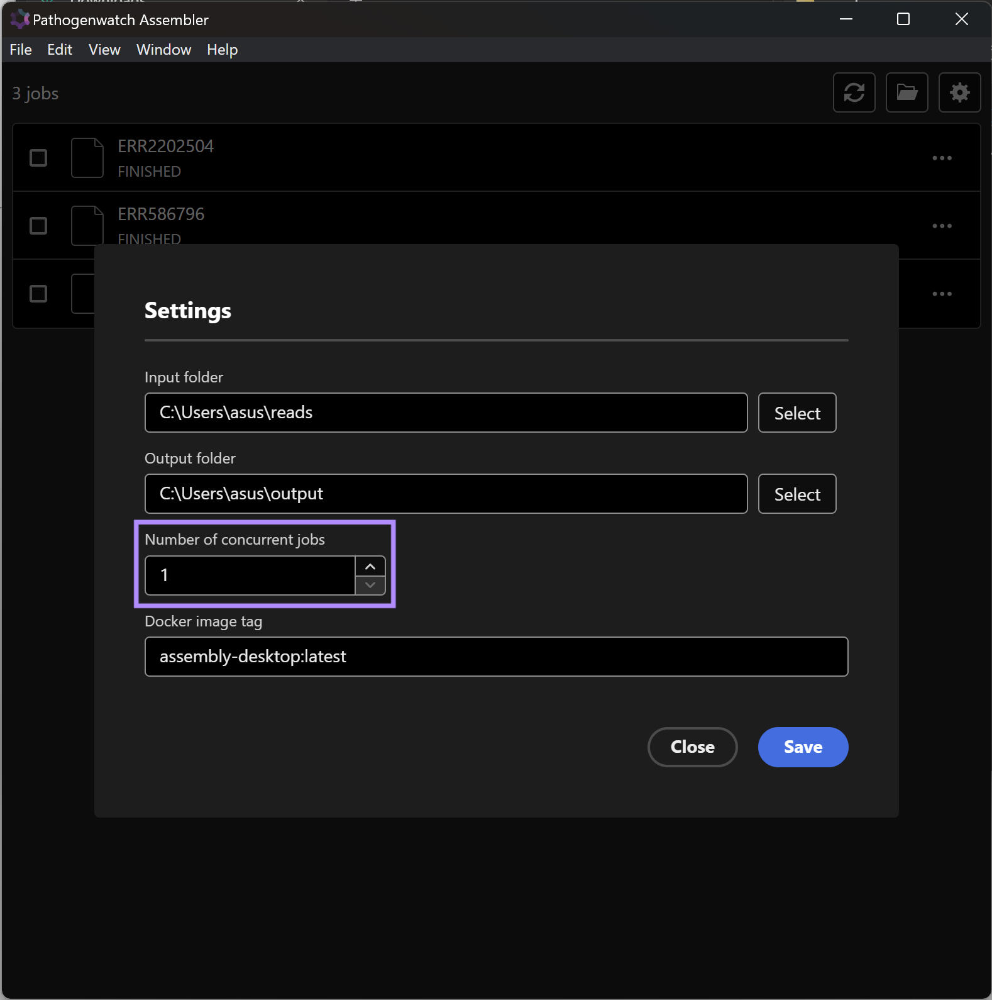
RUNNING: The assembly process of the genomes with this status is currently ongoing and will move to theFINISHEDorFAILEDstatus.FAILED: There has been an unexpected error, and the process has not produced an assembly.FINISHED: The assembly process has completed succesfully.
4. FINISHED Assembly
Once the assembly process has successfully concluded with the FINISHED status, you can access the assembly in fasta format and its accompanying quality metrics file by clicking on the corresponding label in the SQUIRLS app. This will open a folder labelled with the same name as the job in the app. This folder will contain two files:
sample.fasta: the resulting assembly infastaformatstats: the quality metrics collected through the assembly process inCSVformat.
Important
You can change the output folder by clicking on the settings icon , and changing the directory in the output folder setting using the select button. Finally, click on Save.
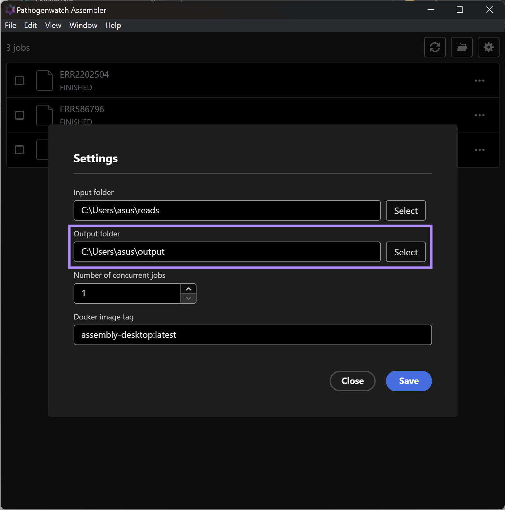
5. FAILED Assembly
If your genome displays the FAILED status, then the assembly did not complete as expected. Clicking on the corresponding label in the SQURILS assembly app will show the log of the assembly process.
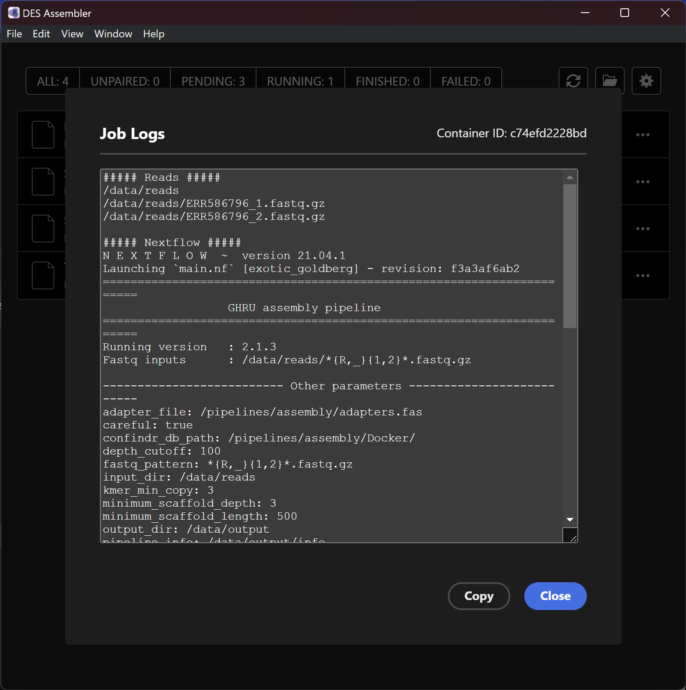
These logs will contain important information regarding the assembly workflow of this genome. This details will prove invaluable in pinpointing the cause of any failure and devising potential solutions.
Tip
You can see the log of any job, unless it has the UNPAIRED status, by clicking on ... at the right end of each genome detected by the app.
6. Clear FINISHED Job Status
Jobs that are in FINISHED status can be cleared from the list. This does not remove the reads from the input folder nor does it remove the output of the job. It simply clears up the assembly job from the list for better visibility.
To clear a job
- Click on the
FINISHEDtab on the top, this will bring up a list of assembly jobs that have finished successfully.
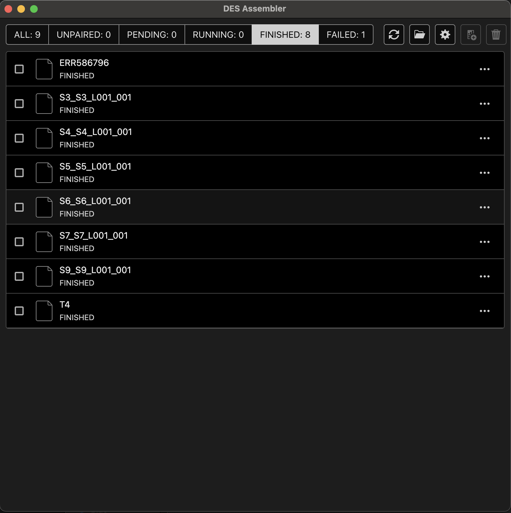
- The
FINISHEDjobs can be selected using the checkbox on the left.
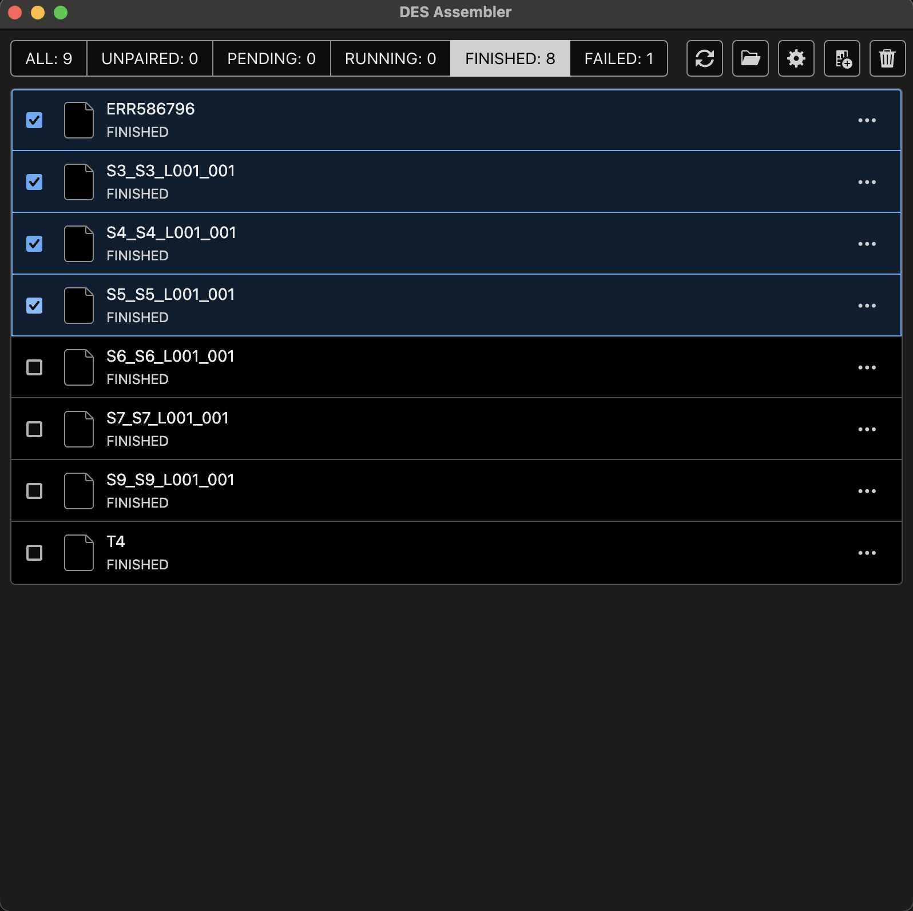
- Click on the Clear icon
This will clear the assembly job from the list.
7. Generating Batch report
A batch report can be generated by selecting a batch of assembly jobs. This will create a csv file with the rows corresponding to the row values from each assembly stats.csv file.
To create a batch report,
- Click on the
FINISHEDtab on the top, this will bring up a list of assembly jobs that have finished successfully. - Select the assembly jobs to include in the batch report.
- Click on the Report icon
This will create a batch report of the selected job. The reports are located in the report folder in your output directory. Clicking the Report icon will open the report folder where you can see the generated report.
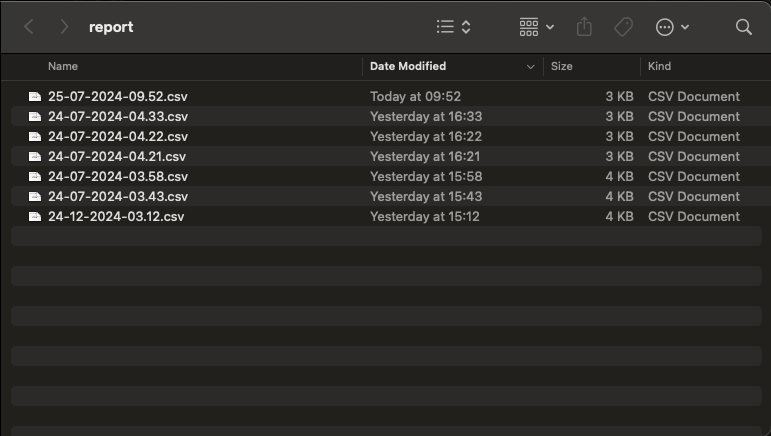
They are dynamically named based on the current datetime.
8.Monitoring assembly job progress.
To monitor the progress of an assembly job simply click on the job, this will bring up a modal with a table containing the assembly steps.
There are three columns in the table, step, startTime, and duration.
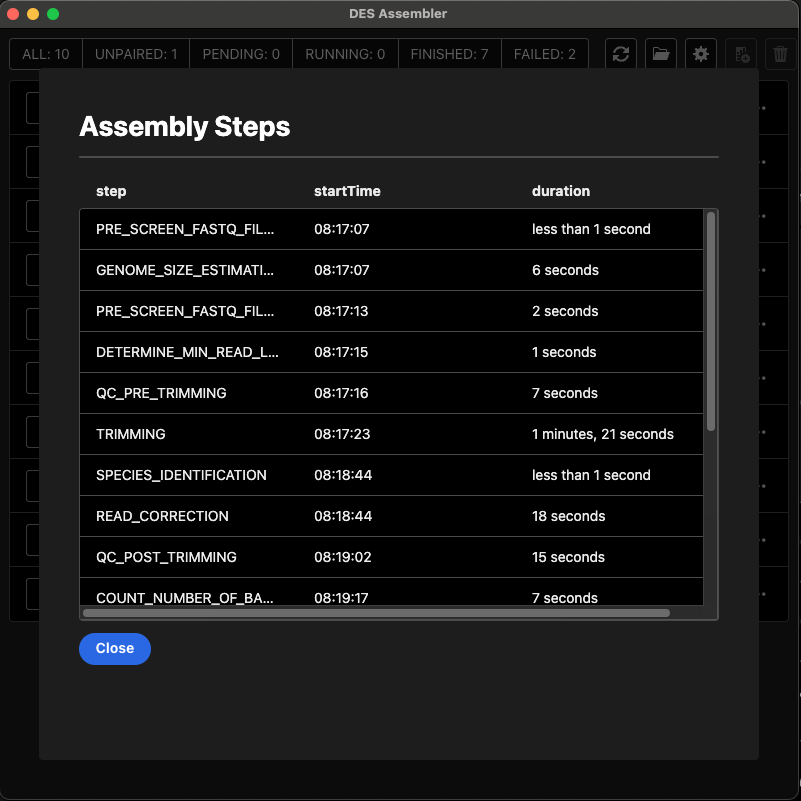